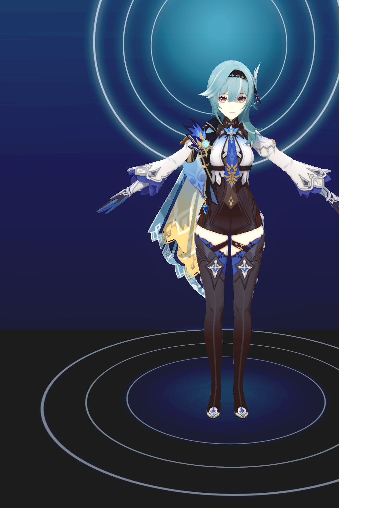

MMD Axis Calibration Contact Sheet
6 captures · 2026-06-15T14:48:24.784Z
upper_body · #1 · 右腕 · X+ · target f32
 upper_body · #2 · 右腕 · X- · target f77
upper_body · #2 · 右腕 · X- · target f77
 upper_body · #3 · 右腕 · Y+ · target f122
upper_body · #3 · 右腕 · Y+ · target f122
 upper_body · #4 · 右腕 · Y- · target f167
upper_body · #4 · 右腕 · Y- · target f167
 upper_body · #5 · 右腕 · Z+ · target f212
upper_body · #5 · 右腕 · Z+ · target f212

upper_body · #6 · 右腕 · Z- · target f257